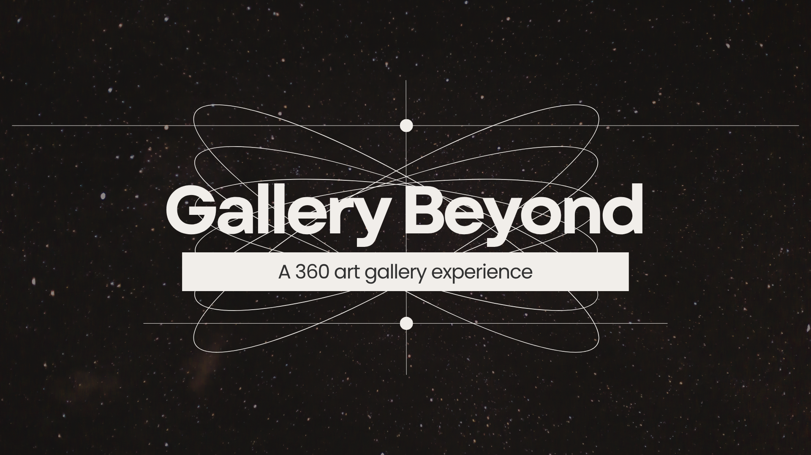
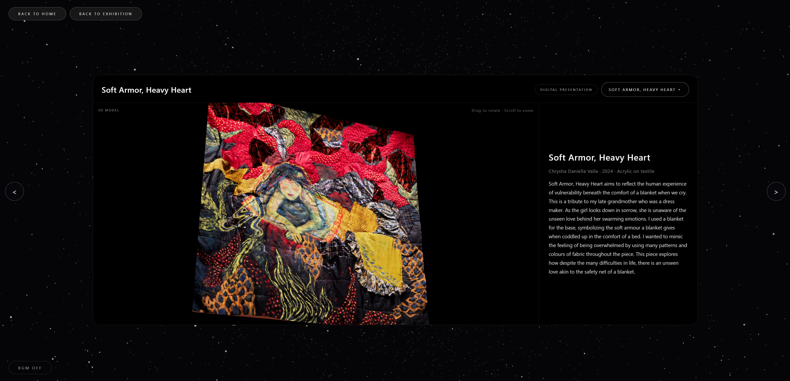

context
The purpose of this project was to create an immersive virtual exhibition that simulates a physical gallery experience, while making it accessible in a digital format. As indicated in the project concept, the goal was not only to replicate a gallery space, but to explore how interaction and interface design can reshape how users engage with artworks online.
The primary audience includes students, visitors, and general users who may not be able to attend the physical exhibition in person. This includes users with limited access due to location, time constraints, or mobility. As a result, the project focuses on creating an experience that is both engaging and easy to navigate, even for users without prior experience in 3D or interactive environments.
MVP Development
In the initial planning stage, we aimed to create a fully immersive virtual gallery with free movement, interactive artworks, and a dynamic spatial layout. The intention was to replicate the feeling of physically walking through a gallery space.
During the MVP stage (A3), we implemented a basic 360° environment using A-Frame, with limited navigation inside a single room. Interaction was handled through a raycasting system, where users would move their view using WASD and align a central raycast to “lock onto” interactive elements. This allowed users to select options and interact with objects by aiming within the environment.

An early version of the virtual gallery built using A-Frame, featuring a single-room 360° environment and raycast-based interaction for selecting artworks.
User Testing
Usability testing revealed several key interaction issues. Users often misclicked due to unclear interaction feedback, and the hidden cursor made it difficult to control where they were aiming within the 360° space. As a result, interactions felt unpredictable and sometimes frustrating.
In addition, users were often unsure how to begin interacting with the exhibition. While the system was technically functional, the lack of clear visual cues made the navigation system difficult to learn.
These findings highlighted that the main issue was not missing features, but a lack of interaction clarity and control, which shifted our focus toward improving usability rather than adding complexity.
Final Iteration
Based on these insights, we made several major changes in the final iteration.
A key achievement in the final iteration was fully implementing the complete gallery environment, rather than the single-room setup used in the MVP. We introduced eight hotspot navigation points throughout the space, allowing users to move between different areas of the exhibition and creating a more coherent sense of spatial exploration. This made the experience feel closer to walking through a real gallery, while still remaining easy to navigate.

The full gallery environment was implemented with eight navigation hotspots, allowing users to move between different positions and explore the entire exhibition space.
In addition to navigation, we also implemented dedicated hotspots for each artwork, allowing users to directly access individual pieces within the space. Each artwork is linked to a separate detail page, where users can view more information and interact with the work in a more focused context. This helped balance spatial exploration with content clarity, ensuring that users could both navigate the exhibition and engage deeply with individual artworks.
One major change was replacing the original raycasting interaction system used in the MVP. While raycasting allowed a more immersive interaction, it required a high level of precision and was difficult for users to control with mouse. In the final version, this was replaced with a drag-based navigation system, where users can directly control their view by clicking and dragging. This interaction was more intuitive, required less effort to learn, and significantly reduced confusion.
In addition, we transitioned from A-Frame to Marzipano for building the 360° environment. In A-Frame, hotspot placement relied on manually inputting numerical values, which made alignment inefficient and often inaccurate. Marzipano provided a more intuitive and visual way to manage hotspots, improving both development efficiency and interaction precision.

Each artwork is linked with a hotspot, allowing users to directly access and engage with individual pieces within the gallery.

Each artwork leads to a dedicated detail page where users can read the artist statement and interact with scanned 3D models for a closer and more immersive viewing experience.
We also refined the interaction flow to improve fluidity. For example, users are able to continue dragging even when the cursor moves outside the browser window, which helps maintain a continuous viewing experience without interruption. Hotspot visibility and navigation structure were also improved to make interactive elements easier to identify.
Overall, these changes reflect a shift from a technically functional but limited prototype to a more complete and user-friendly system that prioritizes clarity, accessibility, and structured interaction within a spatial environment.
Future Development
In future iterations, several improvements could be made.
One direction is to explore VR-compatible tools, as Marzipano is primarily designed for web-based panoramic viewing and does not fully support immersive VR experiences. This limits the project’s ability to expand into VR headset-based interaction.
Another area for improvement is accessibility, including adding keyboard navigation, alternative interaction methods, and better support for assistive technologies.
Finally, we would strengthen the brand identity of the exhibition by incorporating clearer institutional elements, such as UTM branding, to better situate the project within its original context.